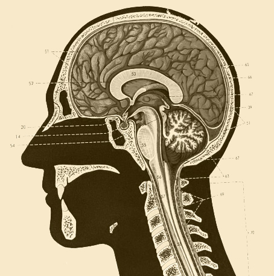
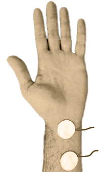
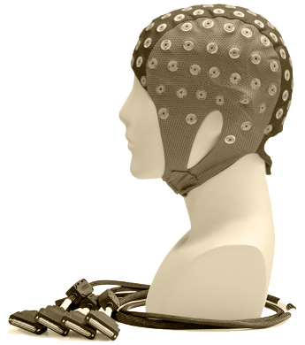

TAKE PART in BRAIN research
Help us understand how sensory information is processedand see your OWN BRAIN in action!
m.j.terwal@tudelft.nl
2 hours
flexible scheduling
ME-building, TU Delft

THE RESEACH QUESTION
When the human body experiences a sensory stimulus, the brain reacts and processes this information. Depending on the characteristics of the stimulus, the brain will react differently. Diseases of the central nervous system or accidents can cause brain damage and thus disrupt normal patterns of activation. In order to assess both healthy or disrupted brain function, we need to understand how specific stimulation parameters affect brain activation. In this experiment we study the processing of sensory information from the hand.
THE EXPERIMENT
In this experiment we use EEG to record brain activity. EEG is a safe and non-invasive technique. We will place a fabric cap with electrodes on your head. These electrodes record the tiny electrical signals from your brain. To improve the signal quality, we will insert conductive gel into the electrodes. You will be able to wash this gel out of your hair after the experiment. The experiment takes part in a dimly lit, sound-dampened cabin in the EEG-lab in the Mechanical Engineering building of the TU Delft. In total, the experiments takes about 2 hours.
To mimic sensory inputs to your hand, we will place electrodes on your wrist. Small electrical pulses will be applied, which will cause a tingling sensation. We will vary the characteristics of these stimuli.
RISKS and BENEFITS
The methods and procedures used in this experiment are standard in both research and clinical practice. All used devices are CE-marked, which means they meet high safety standards. As a result, the study can be considered very low-risk. You may however experience some itching and tingling sensations, as well as fatigue.
Participation in this experiment takes place on a voluntary basis and there are no benefits to you as a participant. You can withdraw at any time without giving a reason.
WHO CAN TAKE PART?
You can take part if you:
- are 18 years or older
- do NOT have a history of neurological disorder (such as epilepsy, migraine, ...)
- are willing and able to spend about 2 hours of your time in the lab